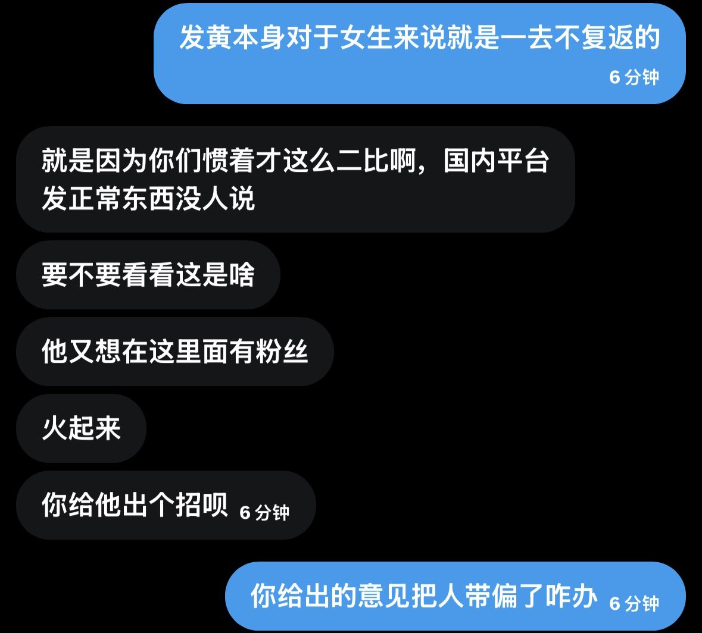

在墙外发自己的身体并不能说是错的吧，但是发的前提是你需要为自己的行为负责，你觉得自己可以无视那些风险或者可以坦然面对那就无所谓。但是我真的觉得对于一个还没接触这些的小女孩来说最好不要，这也不是什么一去不复返的路，但互联网总会留下痕迹的。没必要为了被人关注而去搏这样的风险。


推特的确是个什么都可以发的平台，大家想火起来想被人关注都很正常。但是我还是希望一些孩子不是为了“被爱”而发那些照片，在确保自己可以承担后续影响的前提下再考虑是否要发这样的内容。就算因为这个火起来也会觉得空虚的。总会有人因为你是你而喜欢你。你也一定会是某个人一直在寻找的宝藏。 https://t.co/Ao6PDx8AKZ